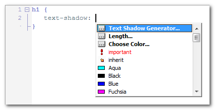
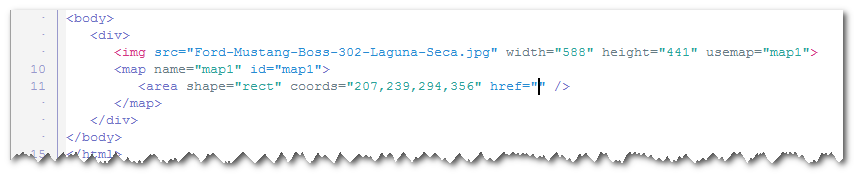
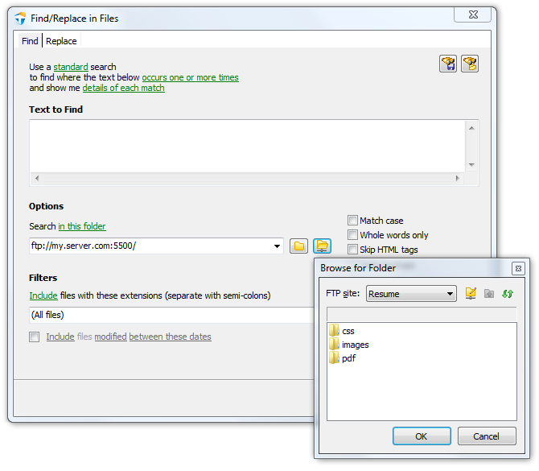

TopStyle 5.0 Release Notes
build 5.0.0.104 / July 10, 2014
Tap into the power of CSS3 and HTML5
What's new in TopStyle 5.0
TopStyle 5 includes many new features to help you create and maintain CSS and (X)HTML documents that support best practices and the latest technologies.
CSS3
CSS3 for Inspector (Shift+F9) and Insight (Ctrl+Space) and Style Checker (F6)
Prefixr
CSS3 Media Queries
CSS Gradient Generator
Text Shadow Generator
Improved options for Preview Files
HTML5
HTML5 for Inspector (Shift+F9) and Insight (Ctrl+Space)
HTML5-only Validator
HTML Tidy for HTML5
HTML Structure Panel
Wrap HTML Tag
Image Map Editor
Preview
Use Google Chrome as the internal browser
XRAY: look beneath the skin
Preview and editor synchronization (HTML-only)
Organize your CSS
CSS Groups
CSS Tidy
Brace matching
Insight (Ctrl+Space)
Filter the drop-down list while typing
Browser compatibility icons
Google Web Fonts
CSS Colors
Highlight CSS color values
Improved CSS color editing
Color Contrast Analyser
Editing Made Easier
SFTP (SSH File Transfer Protocol)
File History
Highlight all occurrences of selected text
Improved property help (Ctrl+click)
Improved Find/Replace in Files
Improved Auto-Replace
Workspaces
Smart Copy and Paste
Quick Access Panel
Drag-and-drop editing
New menu layout
New IDE colors
iWebKit 5
CSS3
TopStyle 5 includes a new style definition for CSS3. This new CSS3 definition is powering many TopStyle features, including the Inspector (Shift+F9), Insight (Ctrl+Space), and Style Checker (F6).
Prefixr
CSS3 is great, but not every web browser out there fully supports CSS3 and CSS3 itself has not reached its final release stage. That is why some web browsers require so-called vendor-prefixed properties. The vendor prefixes ensure that there are no clashes with the changing specification and to allow the browser maker to start supporting experimental CSS properties.
Of course, keeping up with these vendor-prefixed properties (supporting them, remembering them, etc) is hard. In an ideal world, the web developer should have to focus on standards-compliant CSS properties only.
Prefixr to the rescue. Prefixr will filter your (standards-compliant) CSS3 properties and dynamically update them, adding (vendor-prefixed) properties for cross-browser compatibility.
Here's an example. Suppose you have this style sheet:
You can update an entire style sheet, or a few rules, or a few properties. Simply select the CSS you would like to "prefixize" and then select: CSS > Prefixize.
While creating your style sheets in TopStyle, you focus on the standards-compliant properties and do not worry about browser support. Then when you're done, you let Prefixr do the nasty work and convert your (standards-compliant) CSS3 properties into (vendor-prefixed) properties for cross-browser compatibility.
CSS3 Media Queries
CSS2 allows you to specify a stylesheet for specific media type such as screen or print. Now CSS3 makes it even more efficient by adding media queries. You can add expressions to media type to check for certain conditions and apply different stylesheets. For example, you can have one stylesheet for large displays and a different stylesheet specifically for mobile devices. It is quite powerful because it allows you to tailor to different resolutions and devices without changing the content.
When you add a Style Sheet <link> or @import Rule to your document, TopStyle now supports CSS3 media queries:
In this example, the style sheet you're adding to your document will apply if the maximum width of the device is 480px (eg. iPhone display).
CSS Gradient Generator
CSS3 and HTML5 are introducing many exciting features for web developers. One of the features is the ability to specify gradients using pure CSS3, without having to create any images and use them as repeating backgrounds.
Style Insight (Ctrl+Space) includes a CSS Gradient Generator for background-image:

When you pick linear-gradient from Style Insight (Ctrl+Space), the CSS Gradient Generator appears:
From here, you can change the orientation (horizontal, vertical, or diagonal) and the colors that make up the gradient. When you click OK, TopStyle 5 will insert the linear-gradient function into your document:
Text Shadow Generator
CSS3 has a property called text-shadow (a slightly moved, slightly blurred copy of a text).
The TopStyle 5 Text Shadow Generator is a built-in property editor for the text-shadow property:

When you pick Text Shadow Generator... from Style Insight (Ctrl+Space), the Text Shadow Generator window appears:
The simplest form of the text-shadow property has two parts: a color (such as #a5a5a5 above) and an offset (2px 2px in the example above). This results in a sharp shadow at the indicated offset. But the offset can also be made fuzzy, resulting in a more or less blurred shadow.
Improved options for Preview Files (CSS-only)
Starting with TopStyle 5, we have added the following options for Preview Files:
- move most recently used preview file(s) to the top of the list
- include HTML documents that are in the same directory (as your CSS document)
- include HTML documents that are open (in other tabs)
HTML5
TopStyle 5 includes a new HTML5 definition. This new HTML5 definition is powering the Inspector (Shift+F9) and Insight (Ctrl+Space).
HTML5-only Validator
TopStyle 5 includes a new HTML5-only validator. Thanks to this HTML5 validator, TopStyle 5 makes quality assurance of HTML5 less time consuming than it used to be.
HTML Tidy for HTML5
TopStyle 5 includes the HTML5 fork of HTML Tidy, and supports all the new configuration options.
HTML Structure Panel
The HTML Structure Panel appears below the code editor, and displays the hierarchy of HTML tags that leads up to your editing position.
- Open an HTML document
- Place the insertion point into some nested code
- The HTML Structure Panel appears below the code editor
When you click on one of the buttons in the HTML Structure Panel, TopStyle 5 will select the corresponding HTML tag (and its contents) in the code editor:
In addition to the HTML Structure Panel, TopStyle 5 comes with the following new menu items:
- Edit > Select Parent HTML Tag (Ctrl+[)
- Edit > Select Child HTML Tag (Ctrl+])
When you click one of these menu items, the enclosing matching tags (and their contents) are selected in your code.
Note: If you keep clicking Edit > Select Parent HTML Tag, and your tags are balanced, eventually TopStyle 5 will select the outermost <html> and </html> tags.
Wrap HTML Tag
While TopStyle easily provides auto tag closing (you type the <a> and TopStyle will automatically close the tag with </a>), it also allows you to easily wrap an HTML tag:
- Click in some HTML tag
- Select: Edit > Wrap HTML Tag
- Start typing to move quickly to the element name you want to wrap the tag in, using the up and down arrow keys if needed (see figure below)
- Press OK (or the Enter key) when you're done
Your HTML tag should now be wrapped in a new HTML tag, without you having to manually locate the position for the open tag and the close tag.
Image Map Editor (HTML-only)
An image map is an image that has been divided into areas, or "hotspots"; when the user clicks a hotspot, an action occurs (for example, your reader is taken to another Web page).
TopStyle 5 has a built-in image map editor that makes it easy to create image maps for your Web pages:
1. Add an image to your Web page (the easiest way to accomplish this is to drag the Image icon from the Common tab of the HTML toolbar into your Web page)
2. Right-click somewhere in the <img> tag.
3. From the drop-down menu, click on Image Map Editor...
4. Click anywhere on the image, hold down the mouse button, and draw the shape you want on your image.
5. Continue adding hotspots until your map is complete (you can add multiple hotspot areas to your image map)
6. Click on the OK button when you're done adding hotspots.

7. Click in the href attribute, bring up Insight (Ctrl+Space), and select the URL you want the reader to navigate to when he/she clicks on the hotspot.
8. Preview your image map in a web browser to make sure it works correctly.
Editing existing hotspots is easy. Bring up the Image Map Editor (see above), and then click an existing hotspot to select it. From here, you can move, re-size, and/or delete the hotspot(s).
Use Google Chrome as the internal browser
TopStyle's internal preview panel has always supported both Internet Explorer and Mozilla Gecko (Firefox). TopStyle 4 introduced Apple Safari to the mix. Now TopStyle 5 introduces Google Chrome as the internal browser. This Google Chrome-based internal preview is installed out-of-the-box, without you having to download and install anything separately. In other words: this feature works, even if you do not have Google Chrome installed on your computer.
XRAY: look beneath the skin
XRAY helps you visualize the layout of your page. When you click the XRAY button on the Preview panel's toolbar, the XRAY panel comes up. Now when you click any element on the page, the XRAY panel displays the position, margins, padding, and dimensions of the element.
Basically, you click the XRAY button to instantly answer those vital questions: where is the top and left of this element? how big is each margin? how big is the padding? how wide and high is the content box?
In addition to these details, the XRAY panel also displays the CSS selector(s) that apply to the element. When you click on such a CSS selector in the XRAY panel, TopStyle will automatically navigate to this CSS rule in the editor panel (even if that CSS rule is in some other document!)
Preview and editor synchronization (HTML-only)

When you select some text in the TopStyle 5 preview panel, the cursor position in the editor will automatically synchronize with the corresponding text.
CSS Groups
Inspired by CSSEdit, TopStyle 5 introduces CSS groups. Basically, this serves as an organization method for your CSS selectors, and in the CSS Selector Panel (View > Panels > CSS Selector Panel) you can view them in a folder-based layout.
One of the most daunting things about building and maintaining a web site can be wading through huge, disorganized style sheets. Nothing is worse than opening up a style sheet someone else has worked on and thinking, "what the heck happened here?". One of TopStyle's most powerful features is its ability to group CSS selectors into a folder structure.
Creating a new CSS group starts here. Select a few CSS rule(s) and then click on: CSS > New CSS Group:
Enter a name for your CSS group, and TopStyle will insert the following into your document:
/* @group GroupName1 */
/* @end */
If you’re not using CSSEdit or TopStyle, these group comments are just harmless little comments (in other words: they degrade gracefully in other editors). In TopStyle however, you can (un)fold your CSS groups in the editor, and view them in a folder-based layout in the CSS Selector Panel (View > Panels > CSS Selector Panel)
CSS Tidy
TopStyle 5 includes (and integrates with) CSS Tidy, a CSS parser and optimiser. Thanks to CSS optimisation, you have faster loading pages and lower traffic costs. You can also use CSS Tidy to format (or fix) your style sheets for browser compatibility.
Brace matching
When you select a brace, TopStyle 5 will automatically highlight the matching brace:
Brace matching gives you immediate feedback on misplaced brackets and parentheses. The purpose is to help you navigate through your document(s) and also spot any improper matching, which could cause your website to malfunction.
You can enable (or disable) brace matching here: Options (F8) > Editor > Highlight matching brackets and parentheses
Improved Insight (Ctrl+Space)
• Starting with TopStyle 5, Insight (Ctrl+Space) will filter the drop-down list while typing (show only those items that match what you have typed). This makes searching though the drop-down list a whole lot easier. You can toggle this new feature here: Options (F8) > Editor > Insight > "filter the list while typing".
• When creating new CSS selectors while you're inside a <style> tag, Style Insight will list HTML element names:
• If you enter a dot while you're inside a <style> tag, Style Insight will list the class= attribute value(s) that are in your HTML document:

• In addition to these improvements, Insight includes lots of other improvements such as browser compatibility icons, Google web fonts, CSS gradient generator, text shadow generator, etc.
Browser compatibility icons
When you bring up Style Insight (Ctrl+Space) for a CSS property, TopStyle 5 will display browser compatibility icons for each and every property name:

In this example, box-sizing is supported by all web browsers, columns is supported by Chrome and Safari, and column-fill is supported by Firefox only.
Google Web Fonts
Google provides lots of high-quality web fonts that work in most browsers. TopStyle 5 now supports automatic insertion of these fonts into your page(s).
You don't need to do any programming; all you have to do is to bring up Style Insight (Ctrl+Space) while in a font-family property, either in a <style> block:
...or with an inline style on the element itself:
Now select "Google Web Font..." and this new property editor will appear:
Check one (or more) font, and click OK. TopStyle 5 will insert the font(s) into your page:
Note: in addition to the font family name, TopStyle 5 optionally adds a stylesheet <link> to the <head> section of your web page (recommended).
Now take a look at the Preview Panel (Ctrl+D). You should see a page displaying the following, in the font called Tangerine:
Making the Web Beautiful!
That sentence is ordinary text, so you can change how it looks by using CSS. Try adding a shadow to the style in the previous example:
You should now see a drop shadow under the text:
Making the Web Beautiful!
Note: when specifying a web font in a CSS style, always list at least one fallback web-safe font in order to avoid unexpected behaviors. In particular, add a CSS generic font name like serif or sans-serif to the end of the list, so the browser can fall back to its default fonts if need be.
Highlight CSS color values
When turned on, this new setting will highlight CSS color values with the actual color they represent.
Improved CSS color editing
- TopStyle 5 displays a little color swatch below every CSS color value. When you click on this color swatch, the color dialog appears. From here, you can easily change the color value.
- When you triple-click on a color value in the editor, the color dialog appears. From here, you can easily change the color under the mouse cursor.
Color Contrast Analyser
The Color Contrast Analyser allows you to specify a foreground and a background color and then determine if they provide enough of a contrast "when viewed by someone having color deficits or when viewed on a black and white screen".
Right-click in a color value and click on Select 1st Color to Compare. Then right-click in another color value and click on Compare Color Contrast...
...the Color Contrast Analyser appears:
The Color Contrast Analyser will indicate that your colors pass the following tests if they exceed their threshold:
- Brightness difference (should be greater than 125)
- Color difference (should be greater than 500)
- Contrast ratio (should be at least 5:1)
In addition to this Color Contrast Analyser, the Style Checker (F6) will validate that any CSS rule with a (foreground) color and background color has sufficient contrast and produce a warning if not:

SFTP (SSH File Transfer Protocol)
In addition to FTP (previously introduced in TopStyle 4), TopStyle 5 now includes support for SFTP. The FTP Explorer Panel allows you to drag-and-drop documents from your SFTP site into the TopStyle editor. When you save your document, it is automatically uploaded to your SFTP site.
File History
TopStyle 5 creates a backup every time you update and save a document. If you want to manage your backups, then right-click a document tab, and select History...
The File History dialog appears:
From here, you can open a backup, compare differences between revisions, or roll back to a backup (restore a previous revision).
By default, TopStyle maintains 10 backups for documents that are updated and then saved. You can change these settings here: Options (F8) > General > File History
Highlight all occurrences of selected text
TopStyle 5 allows you to highlight (and replace!) multiple occurrences of text (for example: a JavaScript function name) in your document.
When you select some text, a new button labeled "highlight all occurrences of..." appears in the gutter:
Click this button, and TopStyle will highlight all occurrences of your selected text:
Now start typing, and TopStyle will replace all occurrences with what you typed!
Note: if you would like to bail out of this feature, you can simply click the button in the gutter again, or move the caret to some other position in your document.
Improved property help (Ctrl+click)
When you click on a CSS property name while holding the Ctrl key down, detailed help on the CSS property will appear. Starting with TopStyle 5, we have added CSE HTML Validator Help to the potential references for this feature.
In addition to Ctrl+click, help for a CSS property will also appear when you press F1 while the caret is in a CSS property name.
Last but not least, we have added help for HTML elements! Press F1 while the caret is in an HTML tag, and detailed help on the HTML element will appear.
Improved Find/Replace in Files
TopStyle 5 adds support for (S)FTP to Find/Replace in Files. Starting with TopStyle 5, you can search a remote (FTP or SFTP) site in the same manner as a local folder:

Starting with TopStyle 5, we have added the following new options to Find/Replace in Files:
- in the folder of the current document
- in the folder of the current document and its subfolders
Improved Auto-Replace
TopStyle 5 includes greatly improved auto-replace, adding the following new features:
- multi-line items; now you can replace your text with multiple lines
- use variables to have TopStyle prompt for custom text before replacing your text
- support for document type (CSS or HTML); now you can have separate items for CSS and HTML
Workspaces
TopStyle 5 helps you manage your documents with workspaces.
A workspace remembers remembers "things" about the documents you're working on. For example: a workspace remembers your previously opened documents, and then restores those at start-up. When you switch to another workspace, the documents of that workspace are opened, and if you switch back to the former workspace, your previously opened documents are restored. This is extremely useful when working on several projects at the same time.
By default, TopStyle stores everything in a built-in workspace named "TopStyle Default". However, you can create a new workspace (File > New Workspace) or open another workspace (File > Open Workspace). Saving a new workspace is just like saving a normal document - you simply choose a name for the workspace.
In addition to your previously opened documents, a TopStyle workspace restores...
• your last File Explorer directory
• your last Style definition
• your last TopStyle site
• your last Preview File
Smart Copy and Paste
Copy (Ctrl+C) and Paste (Ctrl+V) is a simple task to perform and every editor is doing it, but there is a way to make it even simpler and faster.
The idea behind Smart Copy is that you do not need to select anything. Whenever the caret is on a word that's not selected, pressing Ctrl+C (or Ctrl+X) creates the selection for you and then copies (or cuts) the selection to the clipboard.
Because you need normal Paste most of the time, Smart Paste (Ctrl+Shift+V) selects the current word and then overwrites this with the text you have on the clipboard.
Note: Smart Copy and Paste selects whatever would be selected by double clicking in the exact position.
Quick Access Panel
Inspired by HomeSite, TopStyle 5 now includes a vertical toolbar with quick access to: (un)indent, wrap tag, word wrap, hidden character toggle, line numbers, split screen, full screen toggle, and other useful items.
Drag-and-drop editing
TopStyle 5 re-introduces something that is long overdue: drag-and-drop editing.
New menu layout
Over the years, the TopStyle menus have grown a lot, and the organization of those menus hasn't always, uhm, made sense. For TopStyle 5, we decided to re-design the TopStyle menus. Everything CSS-related is now under a new CSS menu, and the confusing Tools menu is gone.
New IDE colors
TopStyle 5 includes new syntax color coding based upon the Solarized color scheme.
iWebKit 5
TopStyle 5 includes iWebKit 5 - a framework designed to help you create your own iPhone, iPod Touch and iPad compatible website or webapp.
- Start a new iWebKit 5 project via
File > New Site > iWebKit.
- Add a new iWebKit 5 page to your site via
File > New HTML Document > iWebKit.
- the HTML toolbar contains an iWebKit tab, providing easy access to most of the commonly used iWebKit elements (such as navigation buttons, menus, lists, form elements, etc).
In a couple of minutes you will have created a professional looking mobile website. iWebKit is the framework of choice because it is very easy to use, loads extremely fast, and is compatible with all iOS devices.
TopStyle 4.0 Release Notes
build 4.0.0.92 / July 29, 2011
Tap into the power of cascading style sheets (CSS) and (X)HTML.
What's new in TopStyle 4.0
TopStyle 4 includes many new features to help you create and maintain CSS and (X)HTML documents that support best practices and the latest technologies.
Unicode
When you save your (X)HTML document (File > Save As), you can optionally select encoding for your document. TopStyle allows you to save your document ANSI-encoded (the TopStyle 3.x default), or Unicode-encoded (UTF-8 or UTF-16).
When you open an existing document (File > Open), TopStyle will try and auto-detect the encoding for the document you're trying to open. If the document you're trying to open does not contain a BOM (byte-order mark), auto-detect assumes your document is ANSI-encoded (the TopStyle 3.x default).
Note: TopStyle will always include a BOM (byte-order mark) with your Unicode-encoded documents.
Live FTP editing
TopStyle allows you to edit online documents via FTP (File Transfer Protocol). The new FTP Explorer Panel (View > Panels > FTP Explorer Panel) allows you to drag-and-drop documents from your FTP site(s) into the TopStyle editor. Alternatively, you can select File > Open from FTP from the TopStyle menu.
Note: when you save your document, it is automatically uploaded to your FTP site. TopStyle makes FTP totally transparent. You are not bothered with downloading (and/or uploading) your document(s) by hand.
Last but not least, you can upload your local documents (the ones not downloaded from a FTP site) to your FTP site(s) via File > Save to FTP.
HTML toolbar
TopStyle comes with a new, user-configurable HTML toolbar (View > Show HTML Toolbar) that is displayed above the editor. By default, this HTML toolbar is available to (X)HTML documents only, but you can optionally enable it for CSS documents too via Options (F8) > HTML Settings > HTML Toolbar.
Simply click and hold down the mouse button on an HTML toolbar item, and then drag the item from the HTML toolbar anywhere into your document. When you release your mouse button, a snippet is inserted into your document. Some HTML toolbar items optionally display a dialog where you can configure the snippet before it is inserted.
You can apply an HTML toolbar item to selected text as well. Select some text in your document, then click an HTML toolbar item and release the mouse button without dragging the item out of the HTML toolbar.
Note: HTML toolbar items are stored under \Documents and Settings\<username>\Application Data\Bradsoft.com\TopStyle\4.0 (Windows XP) or \Users\<username>\AppData\Roaming\Bradsoft.com\TopStyle\4.0 (Windows Vista). Advanced users can create their own HTML toolbar items.
New style definitions
TopStyle includes new style definitions for IE8 (Microsoft Internet Explorer 8), FF3 (Mozilla FireFox 3), SF3 (Apple Safari 3), and SF4 (Apple Safari 4).
Insight for scripting languages
TopStyle includes Script Insight for ASP (both JavaScript and VBScript), PHP, and ColdFusion.
Code folding
In addition to CSS rule collapsing, TopStyle allows you to collapse...
- Comments in CSS and HTML
- PHP and ASP blocks in HTML
- JavaScript functions and compound statements (such as
while, try, and switch)
Bookmarks
The TopStyle editor context menu contains new commands for navigating your document(s). To display the editor context menu, right-click anywhere in the editor window.
Choose Toggle Bookmarks from the editor context menu to set or clear up to 10 bookmarked locations in each document you have open in the editor. Bookmarks let you save your place within a long document. You can also press Ctrl+Shift and the number of the bookmark to set or change the location of a bookmark. When a bookmark is set, you see a box in the left margin of the editor with the bookmark number in it.
Choose Goto Bookmarks from the editor context menu to display a list of bookmarked locations you can jump to in the editor. You can also jump to bookmarks by typing Ctrl + the number of the bookmark.
iPhone (and iPod touch) web app development
TopStyle includes iWebKit 4, a simple and advanced development framework for iPhone (and iPod touch) web apps:
- Start a new iWebKit 4 project via
File > New Site > iWebKit.
- Add a new iWebKit 4 page to your site via
File > New HTML Document > iWebKit.
- the new HTML toolbar contains an iWebKit tab, providing easy access to most of the commonly used iWebKit elements (such as navigation buttons, menus, lists, form elements, etc).
In addition to iWebKit, TopStyle includes new CSS definitions for Apple's mobile Safari (iPhone OS 1.1 and iPhone OS 2.0).
Last but not least, TopStyle includes a new *internal* preview for Apple Safari.
Improved inline style
Inline style attributes (eg. style="|") support CSS color-coding and Style Insight (Ctrl+Space).
IE8 document compatibility
TopStyle allows you to change the current IE8 document compatibility mode (you can select a mode from the document compatibility list under TopStyle's HTML menu).
TopStyle's full screen preview (F12) enables experimenting with different IE8 document compatibility modes, so you can see how they affect the rendering of your pages. Because the full screen preview may be split in two panels, each preview panel has its own IE8 document compatibility mode!
HTML5
TopStyle contains a new HTML definition for HTML5, and supports the new !DOCTYPE for HTML5.
Improved CSS Insight
- includes recently used colors (CSS color properties only)
- (sub)property values are grouped (CSS shorthand properties only)
Live spelling (HTML-only)
TopStyle identifies spelling errors as you type with wavy red underlines, and allows you to act upon each identified problem with a new context menu.
New HTML templates
TopStyle includes new (HTML) templates for HTML5, ASP JavaScript, ASP VBScript, ASP.NET C#, and ASP.NET VB.
Support for the latest web browsers
TopStyle auto-detects the latest (external) browsers, including Mozilla Firefox, Apple Safari, Opera, and Google Chrome.
Additionally, the (internal) preview for Mozilla Gecko (Mozilla FireFox) has been updated to support the latest version of Mozilla Gecko (Mozilla FireFox).
Improved PHP support
Inside PHP HEREDOCs, TopStyle will display its Tag Inspector (or Inline Style Inspector) and HTML Insight when you're adding/editing HTML tags.
Improved CSE HTML Validator integration
TopStyle includes improved integration with CSE HTML Validator, including HTML link checking.
Updated HTML Tidy
TopStyle includes the latest release of HTML Tidy, and supports all the latest HTML Tidy configuration options.
Look & Feel
TopStyle supports (Windows) XP themes, and provides a better visual user-interface experience on Windows XP, Windows Vista, and Windows 7.
TopStyle 3.5 Release Notes
build 3.5.0.9 / October 15, 2007
Changes in Version 3.5
- Added: "Box Spy" - exposes an HTML tag's margins, padding and content box as you mouse over it in the preview
- Added: External URLs may now be used as preview files when editing CSS documents (IE only) (28922)
- Added: "Find in Files" now supports replace (
Edit > Find/Replace in Files)
- Added: Style definition for Firefox 2 (73921)
- Added: Style definition for Internet Explorer 7
- Added: Style definition for Safari 2 (36348)
- Added: Style definition for Opera 9
- Added: Style definition for Outlook 2007 (HTML email)
- Added: IE7, FF2 and O9 added to property help
- Added: Support for PNG images in the thumbnail viewer
- Added: Site Reports now supports multiple class names within a single class attribute (ex:
<p class="one two three">). The first time you open a site created in a previous version, TopStyle will quickly scan its HTML files for multiple class names, and if any exist, you'll be prompted to upgrade the site. Note that the upgrade must be performed in order to open the site in v3.5.
- Added: Progress bar added to site-related operations (reports, etc.)
- Added: Insight now displays HTML entities when & pressed in content
- Added: Navigation buttons added to full screen preview (27891)
- Added: Color picker now enables entering (or pasting) a six-digit hex value (58995)
- Added: Hitting TAB when text is selected now indents the selected lines of text
- Added: Preview files dialog now enables multi-select (for deleting multiple preview files)
- Added: Preview files "Add Url" dialog now automatically inserts "http://"
- Added: Safari for Windows auto-detected as external browser
- Added: "Quick Options" added to Options menu and editor context menu
- Added: Support for printing in color (72294)
- Added: "Close other tabs" added to editor context menu
- Added: TopStyle now uses the same error reporting feature that's used by FeedDemon
- Added: "Reopen" added to menu
- Added: "Refresh" button added to file panel
- Added: Performance improvements throughout (hat tip to FastMM)
- Added: Ctrl+M now supports PHP comments
- Added: Hitting TAB when text is selected now indents the selected lines of text
- Added: "Automatically check for new versions" added to General page in Options (checks once a week for new versions of TopStyle)
- Added: "Edit All in Group" added to site summary context menu (ex: opens all files in selected folder)
- Added: The editor tab tooltip for HTML documents now includes the
<title>
- Added: Find/replace in files now enables searching just the current document
- Added: Confirmation dialog when using "Replace All" now moves to avoid obscuring the selection
- Added: Find/replace now scrolls the matched text to the middle of the screen, to provide better context
- Added: Clicking the "Edit" toolbutton below a site report now highlights the selected class or ID in the editor
- Changed: "File list panel" renamed to "File explorer panel"
- Changed: The thumbnail viewer is now embedded below the file explorer. Selecting a thumbnail will highlight it in the file list, and selecting an image in the file list will highlight it in the thumbnail viewer.
- Changed: HTML Tidy (Tidy.exe) upgraded to June 13, 2007 version
- Changed: Style definitions for Safari 1.0, Opera 8, Netscape 4 (Mac), Konquerer, and Netscape 8 are no longer included in the install (but they won't be removed if you already have them)
- Changed: Comment tags no longer inserted when selecting
- Changed: "Remove existing styles before previewing" moved from Options dialog to preview options toolbutton
- Changed: "File list panel" renamed to "File explorer panel"
- Changed: Thumbnail viewer moved to file explorer panel
- Changed: Color values (both named and hex) are now inserted in lowercase by default (this can be changed on the "Colors" page in TopStyle's options)
- Changed: When "auto-convert special characters" is enabled, the conversion is now skipped when typing inside a comment
- Fixed: TopStyle's help fails to load on Windows Vista (75255)
- Fixed: "Color grabber" (eyedropper icon) in TopStyle's color picker fails on Windows Vista (95879)
- Fixed: Style checker incorrectly flags 'inline-block' as an invalid display value in CSS 2.1 (52804)
- Fixed: Style checker incorrectly gives generic family name warning when 'inherit' used for font-family
- Fixed: Content-type doesn't include 'text/html' when using W3C HTML Validator (72220)
- Fixed: Style sweeper removes last declaration in rule when it doesn't end with a semi-colon (51045)
- Fixed: Style sweeper fails to move at-rules to the top when sorting selectors logically (78484)
- Fixed: "Open from Web" needs to insert HTML comment after DOCTYPE or XML prolog, and CSS comment after @charset declaration (52460)
- Fixed: Find dialog doesn't accommodate user-modified system font sizes (50155)
- Fixed: TopStyle may start partially obscured on multimon systems when secondary monitor is "higher" than the primary (49389)
- Fixed: Exception when loading trial version if older version of TopStyle Lite installed after installing trial version (63211)
- Fixed: Embedded browser doesn't support
Ctrl+C and other standard shortcuts (63743)
- Fixed: Class names containing hyphens aren't color-coded correctly (61205)
- Fixed: Can't cut, copy or paste color values in color picker
- Fixed: Files with no extension can't be opened from the file panel (69428)
- Fixed: Default keyboard shortcuts can be deleted (72183)
- Fixed: Access violation when using TopStyle over VNC (71285)
- Fixed: Clicking +/- buttons in palette editor selects that color in the editor (50731)
- Fixed: Changes aren't reflected when "Synchronize the preview with editor position" is enabled and IE7 is installed
- Fixed: Status bar shows the wrapped line number instead of the unwrapped line number when word-wrap is enabled (30539)
- Fixed: Form controls don't reflect current XP theme
- Fixed: Insight doesn't accommodate multiple class names (35819)
- Fixed: Files which use the Mac EOL format are converted to PC EOL format when saved in TopStyle
- Fixed: Opera 9 not auto-detected as external browser
- Fixed: Safari for Windows doesn't show current document when selected from external browser list
- Fixed: Install fails to warn when TopStyle is already running
- Fixed: TopStyle Lite consistently fails to start on limited accounts
- Fixed: Refresh toolbutton on file panel doesn't refresh folders
- Fixed: Invalid thumbnail images show up as empty boxes (changed to write "Error" on the thumbnail)
- Fixed: Thumbnail viewer shows wrong size when large fonts are used (102914)
- Fixed: Auto-generated CSS preview doesn't handle definition lists correctly (104260)
- Fixed: Hex values typed into the color picker don't honor the "Lowercase hexadecimal color values" setting
- Fixed: Crash at closing when preview is showing an active embedded object (such as a running YouTube video)
- Fixed: Panel captions too large when using large fonts
- Fixed: Thumbnail viewer doesn't reload when hitting refresh
- Fixed: "Edit Preview Files" doesn't show filenames in tooltip
- Fixed: "Edit Preview Files" leaves multiple files selected after re-ordering
- Fixed: Error when checking for hyperlink at cursor (99261)
- Fixed: Error attempting to make TopStyle the default CSS editor under non-admin Vista (102104)
- Fixed: Error adding TopStyle to IE's list of HTML editors under non-admin Vista (107382)
- Fixed: Exception when clicking an empty link in the preview
- Fixed: TopStyle's "user" folder not always successfully copied to "Application Data" folder when the multi-user install option was chosen
- Fixed: "File in use" error when style sheet displayed in dual full screen preview
- Fixed: Color-coding of
<link> tags doesn't account for embedded PHP/ASP
- Fixed: Invalid
<script> tag inserted when JavaScript filed drag-and-dropped onto XHTML document
- Fixed: Color picker shows previous color selection
- Fixed: "Read only file" warnings in message panel appear under the wrong filename when doing a replace in files
- Fixed: Insight for the current CSS property doesn't automatically appear if there are no spaces between the cursor position and the close brace
- Fixed: Sibling selectors incorrectly appear in orphan classes report
- Fixed: Style Sweeper adds extra ";" to end of style rule when preceded by a comment
- Fixed: Style Sweeper removes double-spacing inside comments even when "remove blank lines" isn't selected
- Fixed: Style Sweeper removes comments that appears right after a declaration if immediately preceded by another comment
- Fixed: Style Sweeper fails to correctly indent comments that appear above indented declaration
- Fixed: Style Sweeper removes comments that appear before a declaration's semi-colon when reformatting color values
- Fixed: Can't use Ctrl+C in site reports editor
- Fixed: If a style rule isn't closed, subsequent rules don't color-code correctly even after typing a "}" to close the rule
- Fixed: When building a site, @import statements are ignored in HTML documents which use Eric Meyer's highpass filter hack (109347)
- Fixed: "Find/Replace in Files" fails with search strings longer than 255 characters
- Fixed: File error when switching between embedded IE and the Mozilla Control
- Fixed: Crash under Windows Vista when using the default style preview if the current style sheet contains an
applet selector